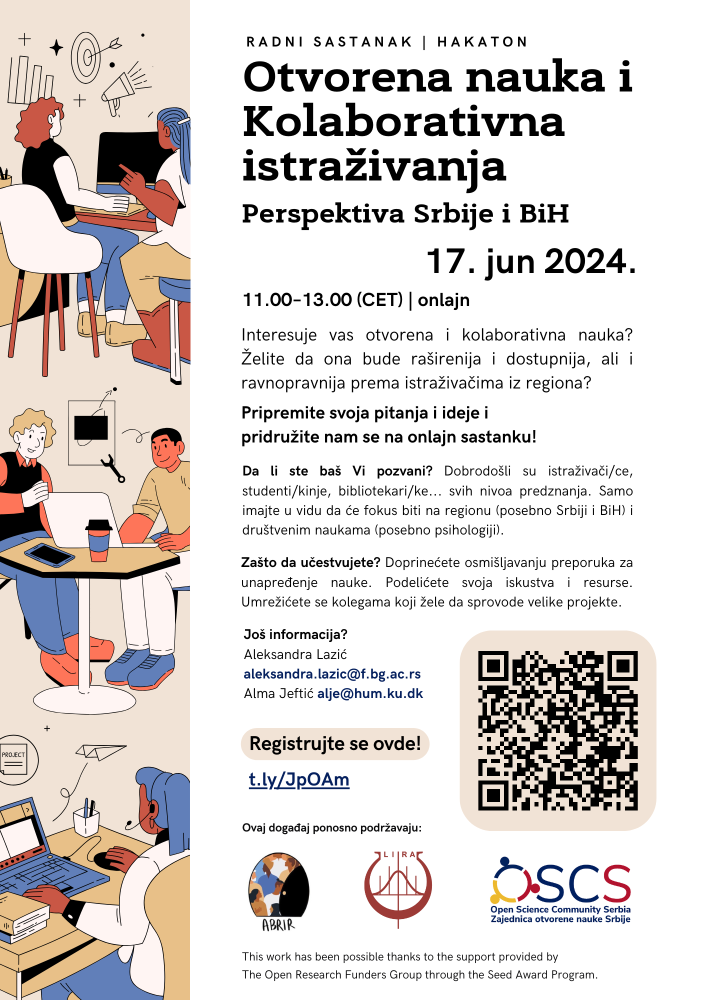

U ponedeljak, 17. juna 2024, u terminu od 11.00 do 13.00 časova, ABRIR, OSCS i LIRA Lab organizovali su onlajn hakaton/radni sastanak na temu „Otvorena nauka i kolaborativna istraživanja – Perspektiva Srbije i BiH”. Pristup događaju je bio otvoren za sve zainteresovane, uz obaveznu registraciju, preko Zoom aplikacije.

O hakatonu
Događaj je bio namenjen svima koji su zainteresovani za otvorenu nauku (eng. Open Science) i velika, kolaborativna istraživanja (eng. Big Team Science), kao i onima koji žele da otvorena i kolaborativna nauka bude dostupnija i ravnopravnija prema istraživačima iz regiona.
Cilj hakatona je bio da se, kroz deljenje iskustava i prepreka u učestvovanju u otvorenoj i kolaborativnoj nauci, osmisle preporuke za unapređenje nauke, koje će kasnije biti predstavljene međunarodnoj publici, kao i da se otvore vrata ka umrežavanju lokalnih istraživača koji žele da sprovode velike projekte.
Bili su dobrodošli istraživači, studenti, profesori, bibliotekari... svih nivoa predznanja. Fokus je bio na regionu (posebno Srbiji i Bosni i Hercegovini) i društvenim naukama (posebno psihologiji). Hakaton su vodile Alma Jeftić (ispred ABRIR-a) i Aleksandra Lazić (ispred ABRIR-a, OSCS-a i LIRA Laba).
Materijali
Slajdovi, kao i baza korisnih resursa prikupljenih tokom hakatona:
https://zenodo.org/doi/10.5281/zenodo.12119309
Događaj je deo projekta koji je omogućen grantom ABRIR-u od strane ORFG (Open Research Funders Group) - Seed Award Program.